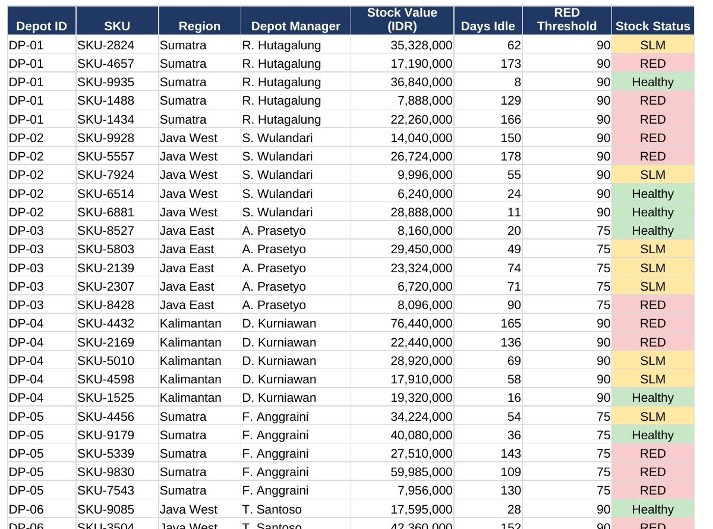
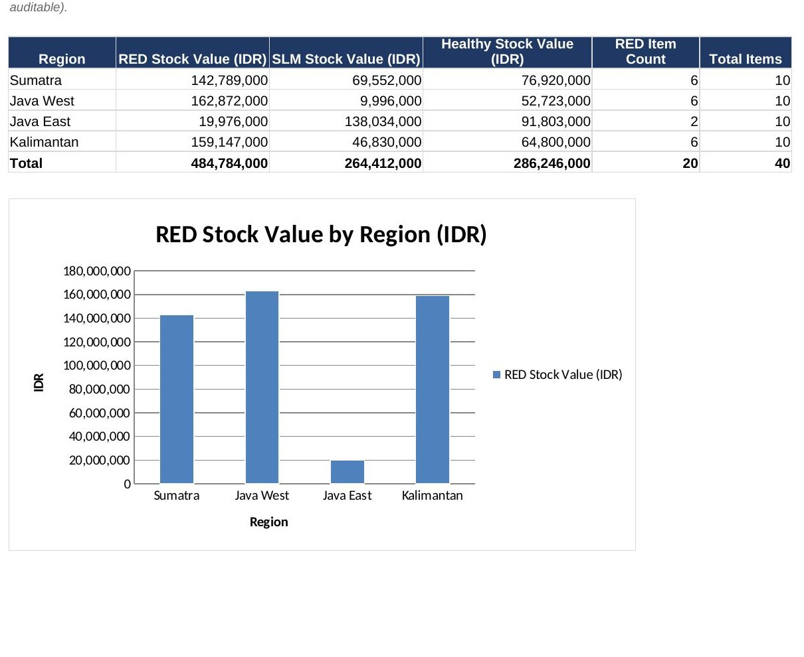

Field report — sales intelligence
Business Intelligence Specialist · Sales Analytics · Channel & Root-Cause Investigation
I turn sales, pricing, and inventory data into decisions — across divisions, not just one. Currently at Nippon Paint Indonesia, reporting directly to National Sales Management on channel strategy, while partnering with Finance on pricing impact and owning the stock-health dashboard that Operations uses to catch at-risk inventory nationwide.
A working rebuild of the stock-health dashboard I own at Nippon Paint — same structure, same logic, illustrative data. Filter by region and the KPIs and chart recompute live, the way the real Power BI version does for National Sales Management.
Management wanted to know whether "Warna Abadi," a store straddling traditional and modern-trade formats, was pulling volume away from the traditional outlets around it — information needed to decide whether to push the outlet, protect the surrounding stores, or simply maintain the relationship.
I mapped every traditional outlet within a 5km radius in Python, compared their sell-through before and after Warna Abadi's ramp-up, and separated genuine cannibalization from area-wide demand shifts.
A regional depot's sales had dropped and nobody could say why. Rather than guess, I ran a structured pass across three candidate causes at once: discount and pricing structure (a deep dive into SAP), operational execution at the depot, and shifts in the local market.
Narrowing across all three in parallel — instead of one at a time — found the combination of factors actually responsible, faster than a sequential check would have.
Depots quietly accumulate stock that stops moving — aging into "RED" status, sliding into slow-moving (SLM), or eating into a depot's available-to-promise (ATP) position. Left alone, that stock becomes a write-down risk and starves the depot of room to receive fresh, sellable inventory.
I own the dashboard that tracks all three metrics across the depot network, flag depots that cross a risk threshold, and provide the deeper analysis a depot or management needs to find why the stock got stuck — a pricing issue, a slow-selling SKU, or an operational gap.
Anyone can list "advanced Excel" on a CV. Here is an actual workbook built around the same stock-health logic as the dashboard above — INDEX/MATCH lookups across sheets, SUMIFS/COUNTIFS for the summary, nested IF for risk flagging, and conditional formatting that reacts to the formula result, not a manually colored cell. Every number below is computed; change an input and the whole sheet recalculates.
385 formulas, 0 errors on recalculation. Depot names and figures are illustrative sample data.


Awardee, Beasiswa Pancakarsa Kabupaten Bogor.
Led 140+ members across 8 divisions and 4 core managers; reviewed 100+ contracts and expenditures.
Led a 4-person team; +1,500 followers and +420% engagement for the Chemistry Department.
Led VCO, eco-enzyme, and mangrove-soap workshops reaching 65–75% of a 60-person village.